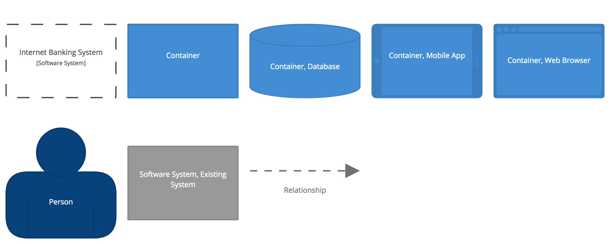

如何画架构图
前言
- 有意义且具备一致性（coherence）的架构图有助于为不同的利益相关者（stakeholder）澄清（illustrate）事实，并达成共识-反之，图表杂乱无章。
- 有意义的图表胜过建模（建模指的是
With modelling, you're building up a non-visual model of something (e.g. the software architecture of a software system), and then creating different views (e.g. diagrams) on top of that model.），在架构沟通上，visualization 胜过千言万语。 - 一致性要求我们有足够好的指导原则，让我们知道标准的图元是什么。
- “架构是一项复杂的工作，只使用单个图表来表示架构很容易造成莫名其妙的语义混乱”。
- 在同一个架构图里添加不同层级的抽象可能会导致冲突的出现，因为它们是从不同的角度描述问题的。
- 应该在架构图旁边加上图例（legend），沟通者应该懂得图元（key）是什么。key 和 legend 都是一种 explicit notion。
- 架构图越多就越难以理解，而且维护起来也很费劲。最直接的后果就是有可能出现碎片化（比如，通过两到三个架构图来描述同样的质量属性——性能、伸缩性等等——但每一个架构图都无法完整地描述它们）。在这种情况下，建议移除不能反映相关质量属性的架构图，或者把它们合并起来。
两类架构师规范
TOGAF
The Open Group Architecture Framework
ArchiMate
ArchiMate，是一种整合多种架构的一种可视化业务分析模型语言，属于架构描述语言（ADL）它从业务、应用和技术三个层次（Layer），物件、行为和主体三个方面（Aspect）和产品、组织、流程、资讯、资料、应用、技术领域（Domain）来进行描述。ArchiMate是 The Open Group 发布的企业级标准。它是一种图形化描述语言，正好可以作为 TOGAF 图形工件的建模工具。
C4
为什么会有 C4？因为每个团队都有自己的 confused mess of box and lines。
我们当然可以使用 UML 来体现包、组件和其他 stereotypes，但UML 不适合加上描述性文本（descriptive text）。
The C4 model was created as a way to help software development teams
describe and communicate software architecture, both during up-front
design sessions and when retrospectively documenting an existing
codebase. It’s a way to create maps of your code, at various levels of
detail, in the same way you would use something like Google Maps to
zoom in and out of an area you are interested in.Although primarily aimed at software architects and developers, the C4
model provides a way for software development teams to efficiently and
effectively communicate their software architecture, at different
levels of detail, telling different stories to different types of
audience, when doing up front design or retrospectively documenting an
existing codebase.The C4 model consists of a hierarchical set of software architecture
diagrams for context, containers, components, and code.
创建 C4 模型是为了帮助软件开发团队在前期设计会议和回顾性记录现有代码库时描述和交流软件架构。这是一种创建代码地图的方法，具有不同的详细程度，就像您使用 Google Maps 之类的工具放大和缩小您感兴趣的区域一样。
尽管主要针对软件架构师和开发人员，但 C4 模型为软件开发团队提供了一种有效地交流他们的软件架构的方法，在进行前期设计或回顾时，以不同的细节级别，向不同类型的受众讲述不同的故事记录现有的代码库。
C4 模型由一组分层的软件架构图组成，用于上下文、容器、组件和代码。
C4 提倡“抽象为先”，由一系列抽象引出架构决策。它的设计模仿了谷歌地图，认为应该通过不同级别的 zoom-in 和 zoom-out 来获取不同层次的信息量。
Context -> Container -> Component -> Code
Context 是把价值交付给用户（stakeholder）的最高级抽象。Context 里有多个 System。
Container 指的是应用程序或者数据存储（这个词在软件工业里被滥用了）。代码在 Container 的边界里执行，数据在 Container 里存储。一个 Container 图就是把一个 System 展开，看到里面的多个 Container（每个 container 是一个 deployable 或者 runnable unit）。
Component 指的是interface 背后被组织起来的一系列相关功能。
代码是 Code Elements。


值得注意的是 context 中的图元总共有 5 种，灰色的盒子是已存在系统的意思。
Context Diagram
系统上下文图是绘制和记录软件系统的良好起点，允许您退后一步并查看大图。画一个图表，将您的系统显示为中心的一个盒子，周围是它的用户和与之交互的其他系统。
细节在这里并不重要，因为这是显示系统景观大图的缩小视图。重点应该放在人（演员、角色、画像等）和软件系统上，而不是技术、协议和其他低级细节。这是您可以向非技术人员展示的那种图表。
范围：单个软件系统。
主要元素：范围内的软件系统。
支持元素：在范围内直接连接到软件系统的人员（例如用户、参与者、角色或角色）和软件系统（外部依赖项）。通常，这些其他软件系统位于您自己的软件系统的范围或边界之外，您对它们没有责任或所有权。目标受众：软件开发团队内外的每个人，包括技术人员和非技术人员。
推荐给大多数团队：是的。


Container Diagram
一旦您了解您的系统如何适应整个 IT 环境，下一步非常有用的是使用容器图放大系统边界。 “容器”类似于服务器端 Web
应用程序、单页应用程序、桌面应用程序、移动应用程序、数据库架构、文件系统等。本质上，容器是一个可单独运行/可部署的单元（例如一个单独的进程空间)
执行代码或存储数据。容器图显示了软件架构的高级形状以及如何在其中分配职责。它还显示了主要的技术选择以及容器如何相互通信。这是一个简单的、专注于技术的高级图表，对软件开发人员和支持/运营人员都很有用。
范围：单个软件系统。
主要元素：软件系统范围内的容器。
支持元素：直接连接到容器的人员和软件系统。目标受众：软件开发团队内外的技术人员；包括软件架构师、开发人员和运营/支持人员。
推荐给大多数团队：是的。
注意：此图没有说明部署方案、集群、复制、故障转移等。
注意，container 相比 context 是把企业边界内的系统进行了下钻（drill down）。

接下来，您可以进一步放大和分解每个容器，以确定主要的结构构建块及其相互作用。
Component Diagram
组件图显示了容器是如何由多个“组件”组成的，每个组件是什么，它们的职责以及技术/实现细节。
范围：单个容器。
主要元素：范围内容器内的组件。
支持元素：容器（在范围内的软件系统内）加上直接连接到组件的人员和软件系统。目标受众：软件架构师和开发人员。
推荐给大多数团队：不，仅在您认为组件图增加价值时才创建组件图，并考虑自动创建长期文档。

Code Diagram
最后，您可以放大每个组件以显示它是如何作为代码实现的；使用 UML 类图、实体关系图或类似的。
这是一个可选的详细级别，通常可以通过 IDE 等工具按需提供。理想情况下，该图将使用工具（例如 IDE 或 UML
建模工具）自动生成，您应该考虑仅显示那些允许您讲述想要讲述的故事的属性和方法。除了最重要或最复杂的组件外，不建议将这种详细程度用于任何其他组件。
范围：单个组件。
主要元素：范围内组件的代码元素（例如类、接口、对象、函数、数据库表等）。
目标受众：软件架构师和开发人员。
推荐给大多数团队：不，对于长期存在的文档，大多数 IDE 可以按需生成这种级别的详细信息。

**我们画 c4 的视图的时候，重点关注 container 和 component 即可。**很多时候我们甚至不需要画出component。
c4 意味着 4 个层次的架构图，自顶向下。
C4 模型没有预定义任何特定的符号，你在这些示例图中看到的是一个个简单的符号，适用于白板、纸张、便签、索引卡片和各种图表工具。你也可以使用 UML 作为符号，并适当使用包、组件和原型。无论你使用哪种符号，我都会建议让每个元素都包含名称、元素类型（即“人”、“软件系统”，“容器”或“组件”）、技术选型（如果有的话），以及一些描述性文字。在图表中包含如此多的文本可能看起来很不寻常，但这些附加文本有助于消除软件架构图中通常会出现的不明确的表示。
图元素里至少要包括：名称、类型、描述和其他属性。
线头至少包括：方向、多对多关系、动作（有时候包含宾语）。
System Landscape diagram

系统景观图的特点是，可以总览企业边界内的系统。注意企业边界给我们带来的各个系统的关联。
Dynamic diagram

动态视图让我们看到在一个功能/用例/用户故事视角下，系统的组件和容器之间是如何交互的。画图时，不必拘泥于颗粒度在抽象上层次的统一。
Deployment diagram

部署视图在视觉上突出了 IaaS 和 Paas 的存在，各种 boundaries 本质上就是划定 containers and deployment nodes。
一些友善的建议
Diagrams
- 每个图都应该有一个描述图类型和范围的标题（例如“我的软件系统的系统上下文图”）。
- 每个图表都应该有一个键/图例来解释所使用的符号（例如形状、颜色、边框样式、线型、箭头等）。
- 首字母缩略词和缩写词（业务/领域或技术）应为所有受众都能理解，或在图表键/图例中进行解释。
Elements
- 应明确指定每个元素的类型（例如人员、软件系统、容器或组件）。
- 每个元素都应该有一个简短的描述，以提供关键职责的“概览”视图。
- 每个容器和组件都应该有明确指定的技术。
Relationships
- 每条线都应该代表一种单向关系。
- 每一行都应该有标签，标签与关系的方向和意图一致（例如依赖或数据流）。尝试使用标签尽可能具体，最好避免使用诸如“使用”之类的单词。
- 容器之间的关系（通常代表进程间通信）应该有明确标记的技术/协议。
4 + 1 视图
4+1-view-of-software-architecture.xmind
漏斗图
Plant UML
Real World PlantUML
Plant UML本地使用扩展名 .puml。
使用 Web Server 来绘制自己的 C4 图，相应的 icons。
注意边界：
- Boundary(alias, label, ?type, ?tags, $link)
- Enterprise_Boundary(alias, label, ?tags, $link)
- System_Boundary
- Container_Boundary(alias, label, ?tags, $link) component 图应该使用这种边界
tags 参考 github 例子，link 是真的让这个图表可以被点击的 link（只在 plantUml 的矢量图上可以点，没什么实际用处），所以这两个 attribute 一般是空白的。

场景分层架构图
这种架构图能够表达用例、场景、context、container 和 component，像 landscape view。

Runtime 图

数据处理系统


保险架构图

大数据架构图


服务治理架构图


Visual Paradigm 的时序图
DB 架构


ELK

log-data-warehouse-arch.drawio
订单系统

内存布局

关于常量池的变化，可以参考：《面试题系列第5篇：JDK的运行时常量池、字符串常量池、静态常量池，还傻傻分不清？》。
总而言之，常量池理论上都会被实现在方法区内，但方法区有时候在 JVM的内存区域里，有时候不在。字符串常量池有时候在方法区内实现，有时候在 managed heap 里实现，这些实现都遵循 JVM 规范。
消息队列

![rocketmq的消息发送原理][rocketmq的消息发送原理.awebp]
Neflix 架构


阿里巴巴数据库


阿里云飞天


知识图谱

CSDN 架构图

Nvidia
Docker

Skywalking

InLong
演进式架构


基于 Sketch 画图


Dubbo

tRPC
插件工厂的整体实现思路是框架只定义插件的标准接口，并提供注册能力，不做具体实现。与外部服务互通，或者对接某个服务治理系统时，只需要开发对应的具体插件即可。
例如: 框架对多协议的支持，定义了统一的Codec，不同协议只需要按照Codec接口即可实现即可。

例如: 框架对接不同名字服务系统，定义了统一的Registry和Selector抽象接口，对接不同的名字服务系统时只需要按照Registry和Selector接口即可实现即可。
通过插件工厂的设计，可以带来以下的好处:
- 对于框架侧: 框架只定义标准接口，没有任何插件实现，与具体平台完全解耦;
- 对于平台侧: 只需要按照框架插件标准接口即可实现插件，即可将平台的能力融入到框架中;
- 对于用户侧: 业务开发只需要通过配置进行使用，对用户透明;
总体架构由 “框架核心” 和 “插件” 两部分组成。 其中虚线框内为tRPC，中间的红色实线框为框架核心，蓝色框为插件部分。
框架核心又可以分三层:
-
通信层: 负责数据的传输和协议的编解码，框架内置支持tcp、udp等通信协议，传输协议采用基于Protocol Buffers的tRPC协议来承载RPC调用，支持通过Codec插件来使用其它传输协议；
-
服务治理层: 负责将服务治理功能抽象成插件，通过调用插件和外部服务治理系统进行对接，实现服务发现、负载均衡、监控、调用链等功能；
-
调用层: 封装服务和服务代理实体，提供RPC调用接口，支持业务用同步、异步、单向以及流式调用等方式进行服务间调用；
此外框架还提供了Admin管理接口，方便用户或者运营平台可以通过调用Admin接口对服务进行管理。 管理接口包括更新配置、查看版本、修改日志级别、查看框架运行时信息等功能，同时框架也支持用户自定义管理接口，以满足业务定制化需求。
插件则是框架核心和外部服务治理组件串联起来的桥梁，按功能大致分为下面几类插件:
- Codec: 提供协议编解码相关的接口，允许通过插件的方式来扩展业务协议、序列化方式、数据压缩方式等协议处理;
- Naming：提供了服务注册(Registry)、服务发现(Selector)、负载均衡(LoadBalance)、熔断(CircuitBreaker)等能力封装，用于对接各种名字服务系统;
- Config：提供了配置读取相关的接口，支持读取本地配置文件、远程配置中心配置等，允许插件式扩展支持不同格式的配置文件、不同的配置中心，支持reload、watch配置更新;
- Metrics：提供了监控上报的能力，支持常见的单维上报，如Counter、Gauge等，也支持多维上报，允许通过扩展对接不同的监控系统;
- Logging：提供了通用的日志采集接口，允许通过插件的方式来扩展日志实现，输出到远程;
- Tracing：提供了分布式跟踪能力，允许通过插件的方式上报到调用链系统;
- Telemetry：提供了采集和上报遥测数据的能力，是一个集成了链路追踪（Tracing）、监控上报（Metrics）、日志采集（Logging）三大功能的插件；
具体插件实现时，一边需要按框架标准接口实现插件，注册到框架核心，并完成插件实例化；另一边具体插件还需要使用外部服务治理服务的SDK或API，实现如服务发现、负载均衡、监控、调用链等功能。